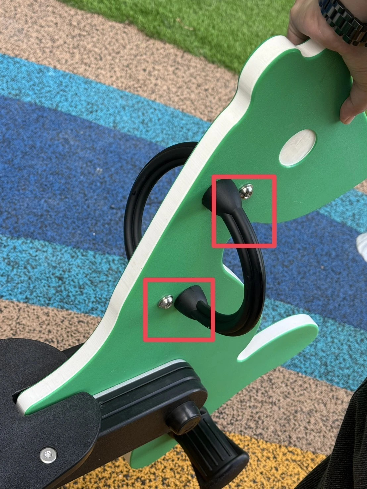

| Clause | Requirement | Observation | Status |
|---|---|---|---|
| F1487 §6.1.2 Materials & workmanship |
All accessible parts free of burrs, sharp edges, and finish defects; corrosion-resistant. | Head is stainless-finish, smooth, no burrs visible. Wood-screw / lag-bolt patterns not used. | Pass |
| F1487 §6.2.1 Sharp points, edges, corners |
No accessible sharp points, edges, or corners on any component. | Domed (round / button) head profile is inherently free of points and edges. Cap, when seated, presents a continuous rounded surface. | Pass |
| F1487 §6.2.4 Cut-off bolt end |
Any cut-off bolt end projecting beyond the face of the nut shall be free of burrs, sharp points, and sharp edges. | Not applicable — the exposed feature is the bolt head, not a cut thread tail. Threaded shank is captured inside the steel handle foot / blind tap and is not visible. | N/A |
| F1487 §6.3.1–6.3.2 Protrusion (projection gauge test) |
Successively place each of three gauges (1.25 in., 2.0 in., 3.5 in. OD, Fig. A1.10) over each accessible projection in all orientations. The projection fails if it extends beyond the face of any of the three gauges (§6.3.2). | Head + cap appear to seat flush with the surrounding green panel. Estimated combined protrusion above panel face ≈ 8–12 mm, well inside the recess depth of the 1.25 in. gauge (32 mm OD × nominal >15 mm depth). Final pass/fail requires in-field gauge test. | Verify |
| F1487 §6.4.3 Exposed bolt-end projection |
Any accessible bolt end projecting beyond the face of the nut more than two full threads is an entanglement hazard. | Not applicable — no threaded end is exposed on this face. Rule governs the opposite face (the nut side); inspect rear of green panel separately. | N/A |
| F1487 §6.4.4 Projections that increase in size (mushroom rule) |
Any projection that fits within any of the three projection gauges and whose size increases >0.12 in. (3.0 mm) from the initial surface with a depth >0.12 in. (3.0 mm) is an entanglement hazard. | Round-head + cap profile is monotonic-tapered (head is widest at the panel face, narrows toward the apex). No undercut or shoulder visible. Cap-to-panel interface tight. | Pass |
| F1487 §6.4.5 Connecting devices (S/C-hooks) |
Closed connectors with gap ≤ 0.04 in. (1.0 mm). | Not applicable — threaded fastener, not a chain/connector link. | N/A |
| F1487 §7.2.6.4 Hand-gripping component (geometry) |
Hand-gripping diameters and lengths per equipment-specific clauses. | The grip itself is a rubber-overmoulded U-bar attached by the fasteners under review. Grip geometry not the subject of this review but is referenced for context. | Out of scope |
| F1487 §8.11.2 Spring rocker handgrip |
Each seating position shall have handgrip(s) that comply with the general protrusion requirements (§6.3) and hand-gripping requirements (§7.2.6.4). One-hand grip ≥ 3.0 in. (76 mm); two-hand ≥ 6.0 in. (152 mm). | Handle assembly (including its fasteners) is bound by §6.3. Bolt heads under review are part of this assembly. Compliance hinges on the projection gauge result in row above. | Verify |
| F1487 §13.1 Maintenance |
Manufacturer maintenance procedures shall be followed; loose or missing parts replaced. | Cap retention is a maintenance item — see Finding F-2. | Action |
| CPSC #325 §5.3.5.2 Hardware (owner guidance) |
Bolts, nuts, screws, and other fasteners that may be reached during play should not have sharp points, sharp edges, or burrs; rivets and bolts should be flush with the surface or covered with caps. | Design uses domed head + protective cap — consistent with CPSC guidance. Cap displacement (F-2) defeats this provision until corrected. | Verify |
| LEKA-STD-PLAY-001 §5.3 | Three-gauge protrusion test is the controlling Leka requirement, regardless of CPSC owner guidance. | Aligned. Pending in-field test. | Verify |

F-1 — Round-head fastener selection (design): Use of round-head (button-head) machine fasteners with continuous-taper protective caps is the manufacturer-preferred, compliant treatment for visible attachment points on spring rocking equipment. The selection is consistent with F1487-17 §6.2.1 (no sharp edges/points), §6.4.4 (no size-increasing projection), and the CPSC #325 owner guidance to keep accessible hardware flush or capped. No design change required.
F-2 — Cap seating (maintenance): On the lower of the two highlighted fasteners, the protective cap appears partially displaced — a thin metal rim is visible at the cap-to-panel interface. While the cap material itself is not sharp, a displaced cap (i) may admit a 1.25 in. projection gauge to register a measurable head projection that an in-situ seated cap would not, and (ii) exposes a metal edge that is no longer flush with the panel surface, contrary to CPSC #325 §5.3.5.2 and LEKA-STD-PLAY-001 §5.3.
F-3 — Thread end (rear of panel, not visible in photo): F1487 §6.4.3 prohibits any accessible bolt end projecting beyond the face of the nut by more than two full threads. The rear (nut) side of the green panel was not visible in the submitted evidence. The rear face must be inspected separately to confirm thread protrusion compliance.
F-4 — In-field projection gauge test required: Definitive pass/fail under F1487 §6.3 can only be rendered with the physical 1.25 in., 2.0 in., and 3.5 in. OD projection gauges (Fig. A1.10) placed over the head in all orientations. Photographic estimation indicates a likely pass but is not binding.